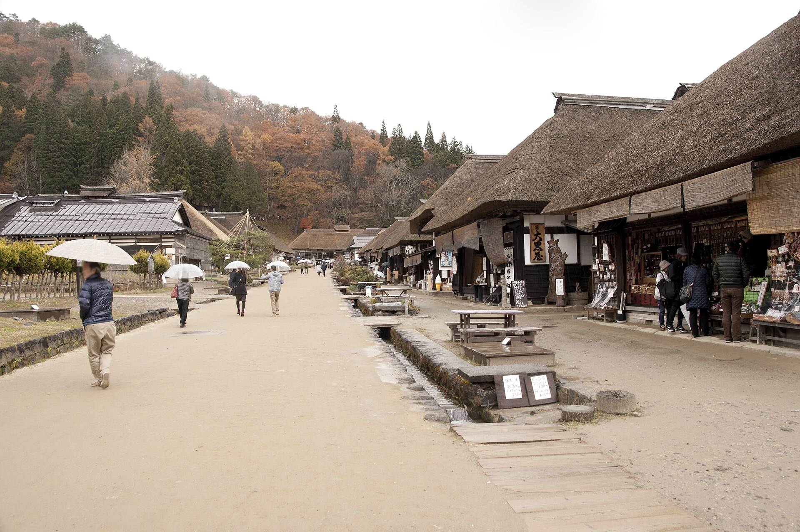
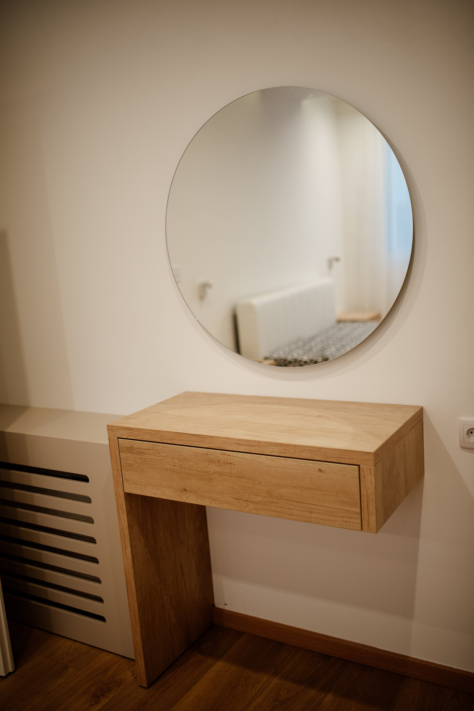

口コミ

会津若松以外、または撮影地不明のイメージ写真です以下はサイト制作側が作成したイメージ例です。実際のお客様の声ではありません。
お客様の声のイメージ
イメージ例来店の前に電話で相談できたので、安心して出かけることができました。聞きたかったことを落ち着いて話せました。
イメージ例(実在の声ではありません)
イメージ例髪のことで気になっていたことを、ゆっくり聞いてもらえました。話しやすい雰囲気だったと思います。
イメージ例(実在の声ではありません)
イメージ例最後に鏡で全体を確認して、気持ちよく帰ることができました。また相談したいなと思いました。
イメージ例(実在の声ではありません)

会津若松以外、または撮影地不明のイメージ写真です